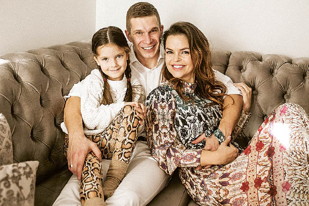

Welcome to tinkamos mitybos maistas
Kaip pereiti prie tinkamos mitybos: kur pradėti? - Sveikas maistas 2020
2020.10.30 03:10Aknė Alergijos Alternatyvioji medicina Amžius Vėžiai Stomatologija Pagrindinis Sveikas maistas
Kaip pereiti prie tinkamos mitybos: kur pradėti?
2019 Tinkama mityba: kur pradėti? Pakeiskite pusryčius Daržovės Ne tik maisto Tinkamas mitybos: meniu Maitinimo schema Produktų sąrašas Gerkite vandenį Kaip pradėti tinkamą mitybą svorio netekimui?Dėl spartaus gyvenimo tempo žmonės pradėjo pamiršti, kas yra tinkama mityba. Ir dėl lengvų užkandžių ir greito maisto ne tik pablogina sveikatą, bet ir sutrumpina gyvenimą. Todėl kiekvienas šiuolaikinio pasaulio žmogus turėtų žinoti, kur pradėti tinkamą mitybą ir kokie maisto produktai turėtų sudaryti sveiką mitybą.
Tinkama mityba: kur pradėti?
Mitybos specialistai nurodo du būdus, kaip pereiti prie tinkamos mitybos: tai laipsniškas mitybos pasikeitimas ir greitas blogų įpročių atmetimas bei perėjimas prie tinkamo maisto. Kuris iš šių metodų yra veiksmingesnis ir mažiau streso kūnui yra sunku pasakyti, nes kiekvienas iš jų turi savo privalumų ir trūkumų.
Žinoma, pirmiausia galite išbandyti vieną būdą, jei nieko neįvyksta, tada pasinaudokite antruoju. Tačiau pirmiausia turite nuspręsti dėl savo norų ir poreikių ir užduoti sau klausimą, ar jums to reikia ir ar galite atsisakyti nepageidaujamo maisto. Jei jūs pats nenorite valgyti teisingai, tada bet kurį pasirinktą metodą, norimą rezultatą bus sunku pasiekti.
Bet kuriuo atveju kiekvienas asmuo turi turėti tinkamą mitybą. Kur pradėti? Išmeskite vieną kenksmingą produktą. Pavyzdžiui, jei geriate keletą puodelių kavos per dieną ar kelis litrus sodos, tuomet turėtumėte atsisakyti šio gėrimo. Be to, jūs turite tai padaryti, neturėtumėte patikrinti savo psichikos. Kaip rodo praktika, pats žmogus jau antrą dieną gali atsisakyti kavos, o jo psichologinis pasąmonė norės gerti gėrimą dar kelerius metus.
Geros sveikatos raktas yra tinkama mityba. Kur pradėti? Pirmiausia reikia atsisakyti kažko lengvesnio, ką retai valgyti. Pavyzdžiui, geriate kavą ryte arba valgyti miltus tik švenčių dienomis - verta pradėti atsisakyti šiukšlių maisto. Ir palaipsniui jūsų mintis ateis į jūsų pasąmonę, kad atėjo laikas atsisakyti visų kenksmingų produktų.
Verta pažymėti, kad jums reikia sumažinti cukraus naudojimą arba netgi pašalinti jį iš dietos, nes jis yra kenksmingas žmonėms.
Pakeiskite pusryčius
Ar nusprendėte pereiti prie tinkamos mitybos? Kur pradėti? Kai pavyko atsisakyti bent vieno kenksmingo produkto dietoje, atėjo laikas pereiti prie kito žingsnio. Atėjo laikas pakeisti pusryčius, ryte jums reikia lengvų užkandžių vaisių.
Apskritai, pageidautina ryte valgyti tik vaisius. Ir po kelių dienų nuo tokios mitybos, jūs pajusite linksmumo, proto ir geros nuotaikos bangą. Jei ne mažiau kaip kelias dienas laikote, mažai tikėtina, kad norėsite valgyti grūdų ar sumuštinių.
Daržovės
Po to, kai jūsų kūnas pripranta prie vaisių, atėjo laikas įdėti daržoves. Be to, jūs turite valgyti šviežių daržovių, geriausia, jei jie yra surinkti iš jūsų sodo. Tačiau, deja, nesvarbu, kiek mes to norime, bet mėgaukitės naminėmis daržovėmis ištisus metus.
Daržovės gali būti derinamos su košė, mėsa, kiaušiniais ir žuvimis. Šioje dietoje nebus nereikalingų daržovių salotų, lengvai prieskonių alyvuogių aliejumi.
Ne tik maisto
Jei norite apskritai tęsti sveiką gyvenimo būdą, turite išmokti suderinti tinkamą mitybą ir sportą. Kur pradėti?
Siekiant pašalinti žalingus maisto produktus iš dietos, jūsų stalo centre visada turėtų būti sveiki vaisiai ir daržovės, kurios turėtų tapti jūsų mityba.
Jūs turite užsiregistruoti sporto salėje, pradėti kietėti, tvarkyti plaukus, eiti į masažą, pradėti skaityti. Beje, knygose galima sužinoti, kaip gera mityba yra naudinga ir kaip greitas maistas ir soda veikia asmenį.
Jei pradėjote laikytis tinkamos mitybos, jūs neturėtumėte vaikščioti su tuščiu skrandžiu kavinėse ir baruose su draugėmis. Galų gale, kai jūs alkanas, jūs tikrai nerūpi sveika mityba, svarbiausias dalykas yra prisotinti skrandį.
Tinkamas mitybos: meniu
Kaip pereiti prie tinkamos mitybos? Kur pradėti? Meniu nėra lengva padaryti. Maistas pirmiausia turi būti subalansuotas. Jei pradėjote valgyti teisę, tada turėtumėte pasiruošti šiems patiekalams ir produktams, kurie dabar bus įtraukti į jūsų mitybą:
Grūdai: grikiai, ryžiai, kviečiai, avižos. Maisto produktai, turintys daug baltymų: mėsos, paukštienos, ankštinių augalų, pieno, žuvies, sūrio, kiaušinių. Naudingi produktai: vaisiai, daržovės, žalumynai, uogos.
Maitinimo schema
Asmuo yra gana sunku pereiti prie tinkamos mitybos. Kaip pradėti valgyti? Jums reikia suprasti, ką reikia valgyti pagal schemą, ty tris kartus per dieną: pusryčiai, pietūs ir vakarienė. Mes kalbame apie pagrindinius valgius, bet 2-3 kartus per dieną galite užkandžius.
Kaip pereiti prie tinkamos mitybos? Kur pradėti? Ryte turėtų prasidėti maisto produktai, kuriuose yra sudėtingų angliavandenių. Po pusryčių iki vidurdienio reikia surengti saldus užkandžių džiovintų vaisių ar medaus. Taip pat galite šiek tiek palepinti save saldumynais, bet tik tuos, kuriuos patys paruošėte. Taip pat galite valgyti riešutus, varškę arba vaisius.
Pietums jums reikia valgyti daug baltymų, pluošto ir angliavandenių turinčių maisto produktų. Šie patiekalai gali būti košė, daržovių salotos arba mažai riebalų turintys vištiena. Vakarais rekomenduojama nevalgyti angliavandenių. Galite valgyti mėsą, varškę, ankštinius augalus, daržoves, kiaušinius.
Visą dieną turite valgyti kuo daugiau žaliųjų.
Produktų sąrašas
Kai einate į parduotuvę, turite sudaryti produktų, kuriuos turėtumėte pirkti, sąrašą. Tai yra būtina, kad, važiuodami po parduotuvę, į krepšį nenaudosite kenksmingų prekių. Galų gale, tokia situacija dažnai atsitinka su visais: tu atvyksi į parduotuvę tik duonos ir išeiti iš jo dviem paketais.
Kaip rodo praktika, naudingiausi produktai yra tie, kurie turi geltoną, raudoną ar žalią atspalvį. Žinoma, ši savybė labiau tinka vaisiams ir daržovėms.
Jūsų sąraše neturėtų būti konservuotų maisto produktų ir soda, kurią dauguma žmonių perka už savo malonumą. Nevalgykite konservuotų vaisių ir daržovių, nes jie yra visiškai nesveiki.
Gerkite vandenį
Norint pradėti valgyti teisę, reikia gerti daug vandens, bent du litrus per dieną. Norint kontroliuoti geriamo skysčio kiekį, turėtumėte laikyti dienoraštį. Bet jums reikia gerti vandenį, tik tada, kai turite troškulį, priversti save gerti skystį, nes tai būtina, tai nėra būtina. Jis turėtų būti girtas lėtai, mėgaudamasis kiekviena gurkšnele.
Verta paminėti, kad troškulio metu vanduo visada turi būti girtas. Tačiau gerti maistą nerekomenduojama. Verta paminėti, kad vėsiausias vanduo yra geriausiai įsisavinamas organizme. Žinoma, jis turi būti švarus. Nuo čiaupo gerti vandenį yra griežtai draudžiama.
Kaip pradėti tinkamą mitybą svorio netekimui?
Dėl to, kad žmogus nenori atsisakyti nepageidaujamo maisto, ne tik jo sveikata kenčia, bet ir jo figūra. Galų gale, jei jūs nuolat valgote riebalus, miltus ir saldus, galite greitai gauti keletą kilogramų. Todėl žmonės, norintys įveikti per didelį svorį, pirmiausia turi pereiti prie tinkamos mitybos.
Kaip pradėti tinkamą mitybą numesti svorio? Verta pažymėti, kad svorio praradimo meniu turėtų būti įvairus. Būtina laikytis šių rekomendacijų:
Maistas turi turėti pakankamai baltymų. Reikia reguliariai valgyti grūdus. Verta valgyti pieno produktus. Bet jei turite daugelį metų, jų vartojimas turėtų būti sumažintas. Ji turėtų valgyti vaisius ir daržoves kasdien. Nepalikite žuvies iš dietos. Maistas turi turėti augalinės kilmės riebalų. Reikia nustoti gerti alkoholinius gėrimus. Cukrus turėtų būti pakeistas cukraus pakaitalu ir bandykite naudoti druską mažiausią kiekį. Iš pradžių maistas gali būti beprasmiškas, bet palaipsniui atrasite naujų skonių. Taip pat verta atsisakyti prieskonių ir rūgštinių maisto produktų, kurie gali turėti neigiamą poveikį organizmui. Reikia sportuoti.Tiesą sakant, pradedant valgyti teisę, tai yra akimirka, jums tereikia įveikti save ir plėtoti valios jėgą, pasakyti ne greito maisto ir greito maisto.
Ankstesnis StraipsnisWarp pap: apžvalgos ir instrukcijos
Kitas Straipsnis„Pulmicort“ vaikams: atsiliepimai. Pulmicort įkvėpus: naudojimo instrukcijos
Rekomenduojama
Moterų sveikataDezinfekavimas su soda dumblui: tirpalo paruošimas, procedūros ypatybės
NarkotikųVasodilatatoriniai vaistai kaklo osteochondrozei. Vaistų sąrašas: tepalai, injekcijos, tabletės
Ligomis ir sąlygomisJoano atrezija: priežastys, simptomai, diagnozė ir gydymas
Redaktoriaus Pasirinkimas 2020-10-30
MedicinaĮkandimo encefalitas pažymimas: pasekmės žmonėms, gydymas
Ligomis ir sąlygomisNefroptozė kairėje: priežastys, simptomai ir gydymo galimybės
MedicinaPagrindinės leukocitų funkcijos: trumpas aprašymas
2019Srautinio indo į akis priežastys, nuotrauka, simptomai ir gydymas
Ar pūslelinė yra infekcinė ar ne? Galimi ligos perdavimo būdai, gydymo metodai, prevencija
Kas yra efektyvesnė: „Waxigripp“ arba „Influvac“? Kokia gripo vakcina yra geresnė?
Hipotireozė yra kas?
Žmonės su negalia, kuriems pavyko (nuotrauka)
https://kibrisdoktor.com © 2020.
Aknė Alergijos Alternatyvioji medicina Amžius Vėžiai StomatologijaKaklo išvarža: simptomai ir gydymas
Aknė Alergijos Alternatyvioji medicina Amžius Vėžiai Stomatologija